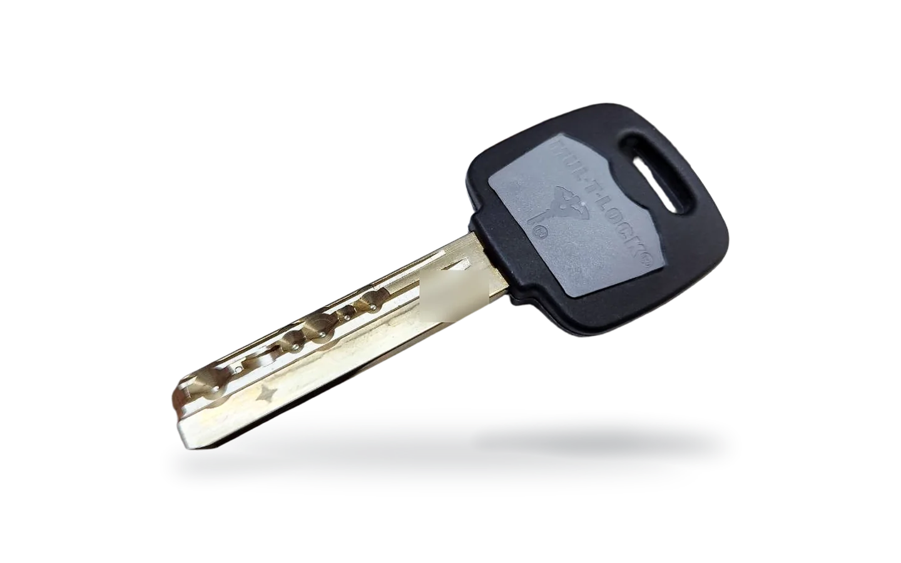
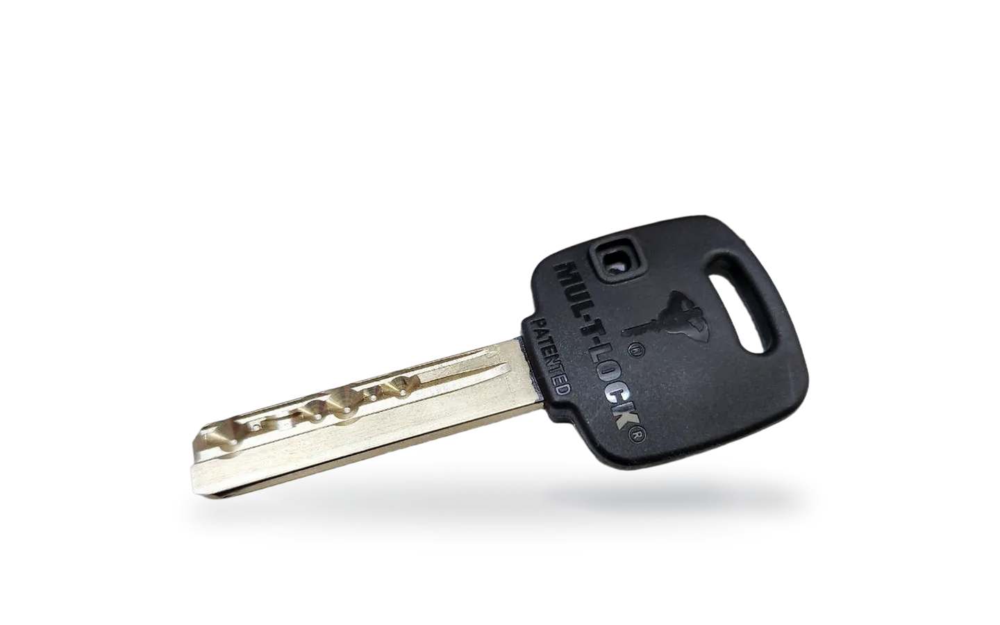

Une cada persona con las puertas que abre.
Qué es un amaestramiento.
Cada persona lleva su llave y abre solo lo suyo; la llave maestra lo abre todo. Con el dibujo de arriba ya tienes tu plan de llaves: cópialo o guárdalo en PDF y pide presupuesto a Gaon System.
Dos llaves en una.
La llave Mul-T-Lock es de doble cara. Cada cara puede llevar un código distinto, y eso da muchas soluciones prácticas en un plan de llaves.
Cara A de una llave MTL300 (foto de la exposición)


Igualaciones
Menos llaves en el bolsillo. Se monta la misma combinación en cilindros, candados y cierres, y una sola llave los abre todos.
Código determinado
Para sistemas ya instalados. Si ya tienes una llave Mul-T-Lock, puedes pedir un cilindro, candado o cierre nuevo con tu mismo código. No hace falta cambiar nada de lo que ya funciona.
Una llave para todo
Dentro de cada plataforma, una llave abre cilindro, cerrojo o candado. Una llave, infinitas posibilidades.
Los pines de amaestramiento son compatibles dentro de tres grupos de plataformas: MTL500 y MTL800; Classic, MTL400, MTL600 y MTL700; y GAON/7x7 y MTL300.
¿Montas amaestramientos?
Los centros técnicos disponen de maletines de amaestramiento y de códigos iguales con los pines por código.